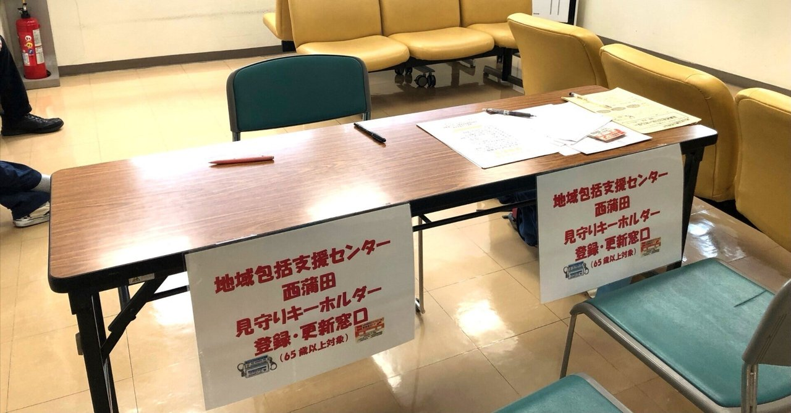

医療・介護・福祉にたずさわる皆さまへ。私たちが地域で果たしたい役割について。
生命（いのち）を支え、人生を灯す。
この言葉を、私たちは病院の中だけで実現できるとは考えていません。
退院したあと、その方がどこで、誰と、どう暮らすのか。そこには、ケアマネジャー、訪問看護ステーション、薬局、デイサービス、地域包括支援センター、行政、そして地域の皆さんが関わっています。
本多病院は47床の小さな病院です。できることには限りがあります。だからこそ、つなぐことを役割のひとつと考えています。
急性期病院からの転院、在宅で療養されている方の急な体調変化、レスパイト（ご家族の休養）のための入院。「断らない」ことを目指しています。まずはご相談ください。
全床を地域包括ケア病棟に転換したのは、「治療して終わり」ではなく暮らしの場に戻すところまでを担うためです。退院後の生活を見据えて、多職種でカンファレンスを行い、必要なサービスにつなぎます。
令和7年に在宅医療センターを設立しました。退院後もご自宅で診療を続け、必要があればまた入院していただく。行き来できる関係をつくることで、地域での暮らしが長く続きます。
地域の医療介護事業者の皆さまとの勉強会の開催・運営にも取り組んでいます。顔の見える関係があることが、いざというときの連携の速さにつながると考えています。
ご紹介、入院のご相談、連携に関するお問い合わせは、コミュニティ支援室（地域連携室）が窓口です。
TEL 03-3732-2339 ／ FAX 03-3732-2335 ／ 受付 9:00〜18:00